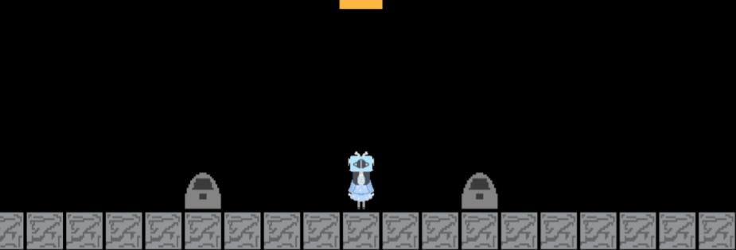

For this project, we can make any type of software using a tool we pick. I made a pixel game inspired from a story I created two years ago by using my tool, Kaboom. I used content from JavaScript to help me learn my tool and used ibis paint to draw my pixel sprites to make my game.
My game gives a chronological order in the player's journey which starts off with a whole scene of dialogues which starts off with introducing the character that will be witht the player throughout the journey. Then, the character explains the setting of the game which is the dreamcore land and the tasks you need to do in order to reach the goal which is to get back to heaven. It later starts off with an obstacle course where not so many people get to beatl. But once you finish the obstacle course, there is another dialogue scene where it will show you the ending of the chapter.
Overall, this project enhanced my own creativity on developing the plot in the game. Doing this project helped my story develop overall. In addition to that, paying attention to detail also helped me with developing my games such as syntax errors, sprites sizes, etc.
One of my challenges was the sprites scale. Every time when my player sprite interacted with another random sprite, there is a huge gap right between them no matter how big or small I sized them. I looked back at the sprite images and noticed there was a huge checkered gap on all of them. So then that's when I realized I had to make all of them full size in order to decrease the gap between the sprites. So I resized the sprites back in ibis paint and the it worked.
If I can add anything else for my project, I can add animations when my character walks and I can also add more levels. I can also enhance my creativity with light backgrounds instead of a background that looks like the void.
Link about the project Behind the Scenes 